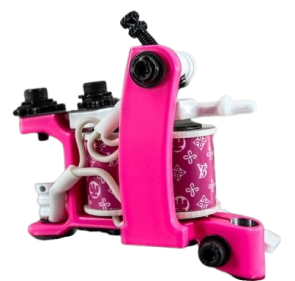

Больно будет только в первый раз!
Многих желающих набить тату волнует вопрос стоимости. Бытует мнение, что единственный фактор, влияющий на цену татуировки — ее размер. Но это далеко не так. Тату-мастер не меряет рисунки спичечным коробком или другими предметами. Расчет стоимости производится при виде точной картины, когда можно полностью оценить рисунок. Давайте разберемся, из чего складывается цена будущей татуировки.


Сергей Кабан
Я думаю, в первую очередь, популярность японской татуировки связана с экзотичностью японского ориентала. Есть даже любопытный факт: Николай II при поездке в Японию сделал себе традиционную японскую татуировку в виде дракона на предплечье. Это можно увидеть на фотографиях бывшего царя. Следующий нюанс — символизм и масштабность работ и то, как они гармонично выглядят на теле.

Руслан Водник
В Технике Тебори я периодически работаю уже несколько лет. Конечно же, у меня есть клиенты, преданные этому методу нанесения японской татуировки, которые намеренно отказываться от привычных машинок и просят масштабные проекты. Но чаще ко мне обращаются, чтобы сделать что-то небольшое, памятное или просто ради интереса попробовать традиционный метод нанесения.

Мурад Дагас
Япония, в принципе, страна ярких образов и глубоких смыслов. Здесь очень много традиций, связанных с синтоизмом — традиционной религией, которая основана на вере в духов и поклонении природе и ее силам. Многие духи принимают форму животных — существующих и мифических.
В этом разделе ознакомимся с нашими мастерами
Здесь ты ознакомишься с нашими мастерами, сможешь перейти в их личный кабинет, чтобы увидеть работы каждого из мастеров.Только ты решаешь, к какому мастеру записаться на сеанс, поэтому рекомендуем тебе ознакомиться с партфолио наших мастеров

Разработчик курсов после которых ты сможешь понять: как делать эскиз какие стили бывают какое бывает оборудование как пользоваться обрудованием. Старст курсов 1 сентября
Оборудование
Delicate Liner (Fine Liner)
"Этот тип настройки был создан в 2013 году в ответ на многочисленные просьбы тату-мастеров. И вот однажды я просто сел и начертил раму и боек другой геометрии, отличной от существующего тогда Pro Liner. Как ни странно созданная на бумаге машинка сразу же заработала именно так, как от нее и требовалось. Этот тип дает идеальные контура тонкими иголками. Эту машинку легко контролировать за счет минимальных вибраций. Ей можно работать как супер быстро, так и со средней скоростью.
Этот однопроходный лайнер предназначен для аккуратных полосок 3-9 иглами. Он незаменим, если Вам нужно быстро, четко и без косяков сделать множество тонких волосков в прическе самурая, реснички на портрете, мелкие точки техникой дотворк или сделать четкую линию на таком сложном и нежном месте, как за ухом.
Даже фанаты только роторных тату-машин покупают эту машинку для великолепных контуров. Очень часто именно эта модель используется реалистами для контурных элементов в их работах.
Благодаря уникальному сочетанию всех компонентов и настройки, эта машинка обладает определенным острым ударом на конце своей амплитуды, и в то же время инерционность бойка подобрана таким образом, чтобы свести на нет "поплывости" и "вдутия". Прощает ошибки не очень твердых рук. Рассчитан как на однопроходную работу "впритоп к коже", так и для работы кончиком иглы с большим вылетом.